¿Qué es la derivada de una función?
Comencemos explicando de forma sencilla qué es una derivada.
Las derivadas principalmente sirven para calcular un valor en un punto determinado de una función matemática que varía progresivamente.
Una función es la relación entre dos valores, en el cual un valor depende el otro. Existe una diferenciación entre varios valores, debido a que un valor (por ejemplo X) cambia a causa de otro valor (por ejemplo Y). En una gráfica ambos valores incrementan progresivamente, de esta forma se ven alterados.
«La derivada calcula el límite de la rapidez de cambio media de la función en cierto intervalo.» Por lo que, una derivada nos ayudará a medir la rapidez con el que se produce el cambio de una magnitud o situación.
¿En qué se pueden utilizar?
Mediante el estudio de funciones y, más concretamente, mediante el uso de la derivada podemos conocer:
- la variación del espacio en función del tiempo.
- el crecimiento de una bacteria en función del tiempo.
- el desgaste de un neumático en función del tiempo.
- el beneficio de una empresa en función del tiempo.
Reglas básicas de derivación
Regla de la constante: 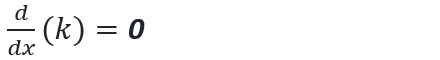
Regla de la suma: 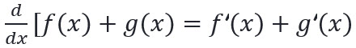
Regla de la diferencia: 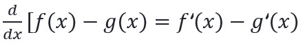
Regla del múltiplo constante: 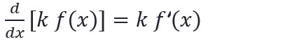
Regla de la potencia: 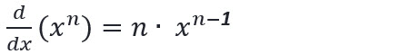
Ejemplos
Función: 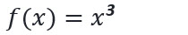
Derivada: 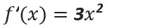
Función: 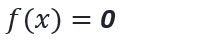
Derivada: 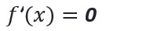
Función: 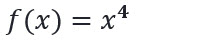
Derivada: 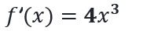
Función: 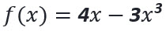
Derivada: 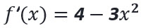